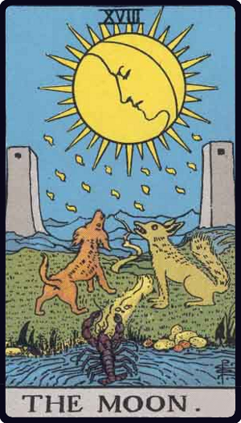

① 今回出たカード
今回、元彼のあなたへの気持ちとして出たカードは次の通りです。
| 位置 | カード | キーワード |
|---|---|---|
| 1枚目 | カップ8 正位置 | 離れる、気持ちの区切り、未練を抱えた撤退 |
| 2枚目 | ペンタクル9 逆位置 | 自信のなさ、依存、満たされなさ、不安定な自己価値 |
| 3枚目 | 月 逆位置 | 不安が晴れる、真実が見えてくる、混乱からの回復 |
| バックカード | カップ5 逆位置 | 後悔からの回復、過去を受け入れる、立ち直り |
② カップ8正位置の意味

カップ8正位置は、気持ちが残っていても、その場を離れようとするカードです。
完全に嫌いになったというより、
「このままでは前に進めない」
「気持ちはあるけれど、距離を置くしかない」
「自分の中で区切りをつけたい」
という心理を表します。
元彼の気持ちとして読むなら、あなたへの感情がゼロになったというより、感情があるからこそ、あえて離れようとしている可能性があります。
カップ8は、カップを置いて旅立つカードです。
つまり、過去の感情や思い出を完全に壊すのではなく、そこに置いていくようなイメージです。
元彼は、あなたとの関係を振り返りながらも、今は「戻る」より「離れて整理する」方向に気持ちが向いているようです。
③ ペンタクル9逆位置の意味

ペンタクル9逆位置は、自信のなさ、満たされなさ、精神的な依存、不安定な自己価値を表します。
本来のペンタクル9は、自立・余裕・満足を表すカードです。
しかし逆位置になると、その自立が崩れます。
元彼の気持ちとしては、あなたに対して
「自分はちゃんと向き合えなかった」
「自信がない」
「自分だけでは満たされない」
「あなたに甘えていた部分があった」
というような感情があるかもしれません。
また、ペンタクル9逆位置は、相手に対して愛情がある一方で、健全な愛情というより依存や甘えが混ざることもあります。
つまり元彼は、あなたを思い出す時に、純粋な愛情だけではなく、
「寂しい」
「満たされない」
「自分を認めてほしかった」
という気持ちも一緒に出てきている可能性があります。
④ 月逆位置の意味

月逆位置は、不安や迷いが少しずつ晴れてくるカードです。
正位置の月は、混乱・不安・見えないもの・疑心暗鬼を表します。
逆位置になると、それらがだんだん明るみに出てきます。
元彼の気持ちとして読むなら、以前はあなたとの関係について混乱していたけれど、今は少しずつ
「自分は何が怖かったのか」
「何を誤解していたのか」
「本当はどう感じていたのか」
が見え始めている状態です。
ただし、月逆位置は「完全に答えが出た」というより、霧が晴れ始めた段階です。
そのため、元彼はあなたへの気持ちを整理しつつあるものの、まだすぐ行動に移せるほど強く決意しているとは言い切れません。
⑤ バックカード・カップ5逆位置の意味

バックカードのカップ5逆位置は、今回のリーディング全体の背景にある気持ちです。
カップ5は、後悔・喪失感・失ったものへの悲しみを表します。
それが逆位置で出ているため、元彼は過去の後悔や悲しみから、少しずつ立ち直ろうとしているようです。
あなたとの関係について、元彼の中には後悔があった可能性があります。
「もっと違う対応をすればよかった」
「失ってから気づいたことがある」
「でも、いつまでも引きずっていても仕方ない」
このような気持ちが見えます。
カップ5逆位置は、復縁の可能性を完全に否定するカードではありません。
むしろ、過去を見直して、前向きな気持ちを取り戻そうとするカードです。
ただし、それは「あなたのところへ戻る」と決めたというより、まずは自分の中の後悔を癒そうとしている段階です。
⑥ 全体のリーディング
この3枚とバックカードをまとめると、元彼のあなたへの気持ちは、かなり複雑です。
一言で言うなら、
「あなたへの未練や後悔はある。でも今は、戻るよりも自分の気持ちを整理して離れようとしている」
という状態です。
カップ8正位置が出ているため、元彼は今、あなたとの関係から一歩離れようとしています。
けれど、それは冷たい拒絶というより、感情を抱えたままの撤退です。
ペンタクル9逆位置があるので、元彼の中にはまだ自信のなさや満たされなさがあります。
あなたに対して、どこか甘えや依存のような気持ちも残っていそうです。
そして月逆位置は、そんな曖昧な気持ちが少しずつ整理されてきていることを示します。
元彼は、あなたとの関係について「何が問題だったのか」「自分は本当はどうしたかったのか」を見つめ始めているのかもしれません。
バックカードのカップ5逆位置から見ると、元彼は過去の後悔から立ち直ろうとしています。
あなたを完全に忘れたというより、あなたとのことを思い出しながらも、前を向こうとしている印象です。
⑦ 元彼はあなたに連絡してくるのか
今回のカードだけで見ると、今すぐ勢いよく連絡してくる可能性は高くないように見えます。
理由は、カップ8正位置が「離れる」「距離を置く」方向を示しているからです。
また、ペンタクル9逆位置も、相手がまだ自信を持って行動できない状態を表します。
ただし、月逆位置とカップ5逆位置があるため、完全に閉ざされているわけではありません。
むしろ、時間が経つにつれて元彼の中で
「やっぱり気になっている」
「自分にも悪いところがあった」
「もう少し素直になればよかった」
という気づきが出てくる可能性があります。
連絡があるとしたら、感情的な勢いというより、少し時間を置いてから、様子を見るような連絡になりそうです。
たとえば、急に深い話をしてくるというより、
「元気？」
「最近どうしてる？」
のような、探るような連絡かもしれません。
⑧ あなたはどう受け取ればいいのか
この結果は、元彼にまだ気持ちがある可能性を示しています。
ただし、その気持ちはまっすぐな愛情だけではなく、後悔・寂しさ・依存・自信のなさも混ざっています。
そのため、あなたがこの結果を受け取るなら、
「彼にはまだ未練や後悔がある。でも、今の彼は復縁に向けて堂々と動ける状態ではない」
と見るのが自然です。
あなたから無理に追いかけると、カップ8の「離れたい」「整理したい」という流れを強めてしまう可能性があります。
今は、彼の気持ちを急かすより、あなた自身が落ち着いて、自分の価値を下げないことが大切です。
ペンタクル9逆位置が出ているため、相手の不安定さにあなたが巻き込まれすぎると、関係が再び不安定になる可能性もあります。
もし復縁を望むとしても、彼の寂しさを埋めるためだけの関係ではなく、お互いが自立した状態で向き合えるかを大切にした方がよさそうです。
まとめ
今回のカードは、元彼があなたを完全に忘れているとは読みにくい結果です。
カップ8正位置は、気持ちを残しながらも離れようとする姿。
ペンタクル9逆位置は、自信のなさや満たされなさ。
月逆位置は、不安や迷いが少しずつ晴れていく流れ。
そしてバックカードのカップ5逆位置は、過去の後悔から回復しようとする気持ちを表しています。
全体として、元彼の気持ちは
「あなたへの未練や後悔はあるけれど、今は距離を置いて自分の気持ちを整理している」
という印象です。
復縁の可能性が完全にないわけではありません。
ただし、今すぐ積極的に戻ってくるというより、彼の中で後悔や不安が整理された後に、何らかの動きが出る可能性があります。
あなたは彼の気持ちに振り回されすぎず、まずは自分自身を整えること。
そのうえで、彼が本当に向き合える状態になった時に、関係をどうするかを判断していくのがよさそうです。